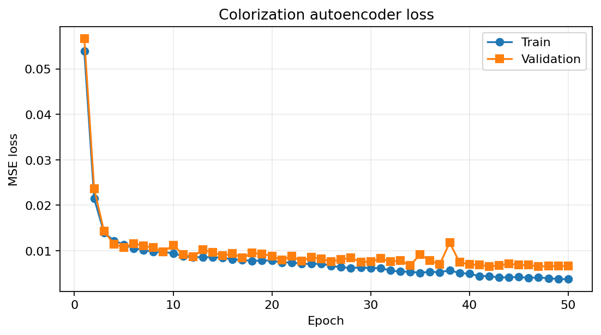

Project 3 / Generative computer vision
Conditional Image Generation and Colorization
Generate class-conditioned clothing images, reconstruct color from grayscale scenes, and explore latent regularization.
Assignment objective
Implement Fashion-MNIST cGAN training and class grids; colorize ten held-out images with MSE, PSNR, and SSIM evaluation; optionally regularize an RGB autoencoder against a Gaussian latent prior.
Implemented approach
The cGAN reads IDX files directly, concatenates learned 50-dimensional label embeddings with 100-dimensional noise or flattened images, and trains fully connected networks with BCEWithLogitsLoss for 30 epochs on 60,000 images. The colorizer resizes to 64 by 64, derives luminance inputs, uses matching-resolution encoder/decoder skips and a full-resolution grayscale skip, and minimizes MSE. The stated split is 441/49/10; validation selects the checkpoint. The bonus AAE uses RGB reconstruction, a 64-dimensional code, and a Gaussian-prior latent discriminator for 50 epochs.
Inputs
Fashion-MNIST training IDX data and the assignment-provided 500-image natural-scene dataset are absent. Saved figures and a colorization checkpoint are present.
Recorded results
The report states mean test MSE 0.00324, mean per-image PSNR 25.57 dB, and mean SSIM 0.9276 over ten images using the epoch-42 checkpoint. Reported final cGAN generator/discriminator losses are 0.8292/0.6624. Notebook notes and report acknowledge repeated class prototypes. The AAE report describes partial prior overlap and blurry random samples.
Reproducibility and limitations
Missing datasets prevent a complete checkout-only rerun. An earlier bottleneck baseline discussed in the report has no separate supplied implementation. The notebook describes stronger class-wise collapse than the report; both acknowledge limited diversity. PCA overlap does not establish full latent distribution matching. Scene images embedded in figures/reports require rights and privacy review.

Tools
Python, PyTorch, NumPy, pandas, Pillow, scikit-image, scikit-learn, Matplotlib
Original materials
Original files remain in the repository. Review access credentials, identifiers, and rights before making them public.